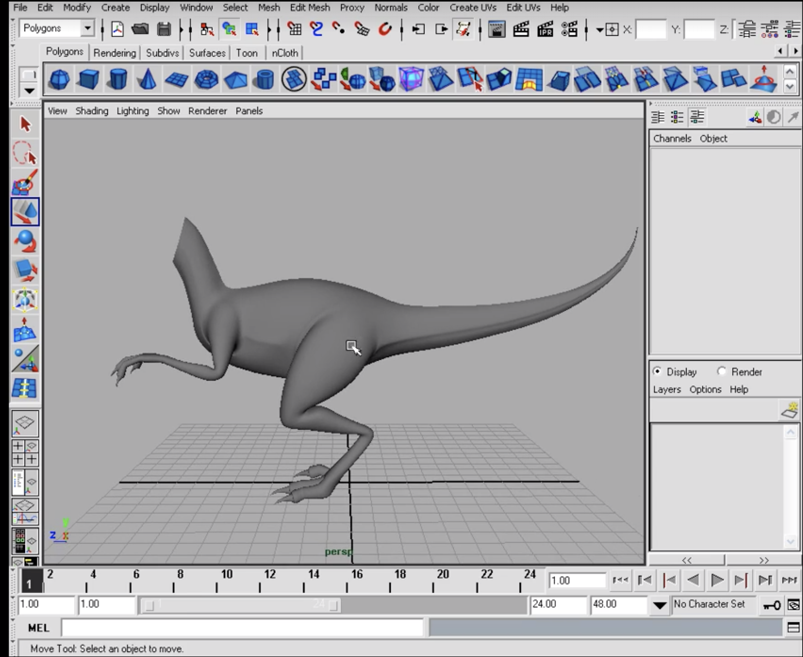

To access subs in Maya 2018: Mesh > Smooth Proxy > subdiv proxy
This is great for bringing in a reference image in the viewport. To access the image plane option, in the desired orthographic view, click view > image plane > import image. Additionally, since this shows up in the perspective view but it’s not really that useful there we can turn it off by going to the image’s attribute then selecting look through camera then select the desired view.
This began by using the EP curve tool to outline the shape of the body of the dinosaur basically creating a curve for the spine and a curve for the underside. After those two, there’s nothing that dictates the width yet, he created another curve between the first two curves that goes through the body. The third curve was then transposed on the x axis and each of the vertices were manipulated to align with the side of the body. Since the number of vertices are not uniform between the three, so he rebuilt the curves. After the curve have equal span, he opened the loft menu and added two span and selected polygon
This started by evaluating the spans where the back leg is going to be attached and see if there’s enough resolution. It was determined that there is not enough so edge loops were added. The vertices were then manipulated to create a circular face and then delete it to make a hole. A cylinder was then created to make leg and place on the ankle. EP Curve tool was then used to add curve for the leg. Then the faces on the cylinder were select along with the curve then the cylinder was then extruded along the curve. Taper value was manipulated to change the thickness of the leg. The faces on top of the legs were deleted. The vertices on top were selected then rotated to be closer to the body. The two separate pieces were combined. Each of the vertices on top of the leg is then selected to snap to the vertices on the body and merged.
To fix the shape of the leg: select>select edge loop tool. But I could not find it on Maya 2018/19.
Some of the edges were deleted to lower the resolution. Used offset edge loop to make the knuckle. Used duplicate faces to duplicate the claw
Instead of extruding a polygon along a curve. A NURBS circle was extruded along another curve. Held down c and snapped the circle into the curve. Manipulated scale this time instead of taper. Instead of manually snapping and merging the vertices, used bridge by selecting border edge tool.
Scaling and manipulating the edge loops to shape the arm to better match the reference image.
Duplicated one of the toes and scaled to make the fingers.
Adding an edge loop adds an edge around an object. This sometimes smooths out curves or crest flat spots. If an edge is needed just in one area, the split polygon tool can be used.
Uses split polygon tool to add subtle creases in the body that separates the top and the bottom. Also used insert edge loop tool but with the autocomplete disabled. User has to provide start and end points.